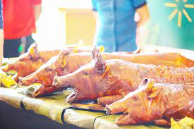

Lapu-Lapu City, situated on the picturesque Mactan Island in the Philippines, is not only known for its stunning beaches and historical significance but also for its vibrant population and rich cultural heritage.

Experience the Vibrant Population and Culture of Lapu-Lapu City
With a population of over 400,000 residents, Lapu-Lapu City is a bustling metropolis teeming with diversity and energy. Its inhabitants, known as Lapu-Lapuños, embody the warmth and hospitality that the Philippines is renowned for, welcoming visitors with open arms and infectious smiles.
The cultural tapestry of Lapu-Lapu City is woven from a myriad of influences, reflecting its storied past and dynamic present. From the indigenous traditions of the Cebuano people to the Spanish colonial legacy and modern global influences, the city's culture is a harmonious blend of old and new.

One of the most cherished aspects of Lapu-Lapu City's culture is its rich culinary heritage. Food plays a central role in the lives of its residents, with fresh seafood, tropical fruits, and flavorful dishes gracing tables across the city. Visitors can indulge in local delicacies such as grilled fish, lechon, and kinilaw, tantalizing their taste buds with the flavors of the Philippines.
But beyond its culinary delights, Lapu-Lapu City is also a hub of artistic expression and cultural celebration. Festivals such as the Kadaugan sa Mactan commemorate historic events like the Battle of Mactan, while dance, music, and visual arts flourish in the city's vibrant communities.
Unwind on pristine beaches, explore the city's pulse, or delve into local customs – Lapu-Lapu City promises an unforgettable adventure. Immerse yourself in the rich tapestry of Filipino life, where every encounter pulsates with vibrant culture and warm community spirit. Discover the soul of Mactan Island, where every moment fosters connection and celebrates the beauty of the Philippines.